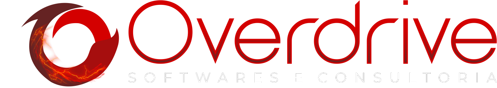
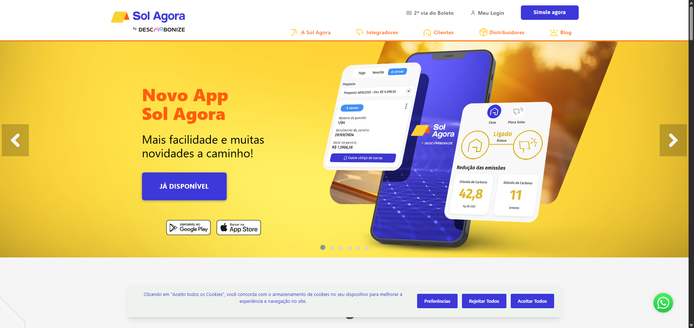

Back-end & APIs
C#, .NET Core, Node.js, Laravel, Entity Framework, RESTful APIs, WebSockets, JWT e Keycloak.
Apresentação
Sou Engenheiro da Computação formado pela FHO e atuo como Desenvolvedor de Software com foco no ecossistema .NET. Minha base técnica foi construída a partir da engenharia, o que me proporcionou uma visão analítica e estruturada para a resolução de problemas complexos e a construção de aplicações escaláveis.
Meu aprofundamento prático em desenvolvimento ocorreu por meio de um programa intensivo, onde consolidei conhecimentos estruturais e de arquitetura com o acompanhamento de desenvolvedores seniores. Essa base me permitiu assumir rapidamente o desenvolvimento de sistemas críticos, atuando diretamente na criação e evolução de um ecossistema robusto composto por mais de 40 microsserviços em .NET Core.
Possuo uma visão sistêmica sobre o ciclo de vida das aplicações. Minha experiência abrange desde a modelagem de bancos de dados e construção de APIs, até a automação de pipelines de CI/CD e orquestração de contêineres com Docker e Kubernetes. Recentemente, fui o responsável técnico por arquitetar e implementar um agente de IA, estruturando a comunicação de baixa latência via WebSockets e a infraestrutura em nuvem na AWS.
No dia a dia, prezo pela qualidade e segurança do código, aplicando princípios de Clean Code, SOLID e testes automatizados. Trabalho bem em ambientes colaborativos e sob metodologias ágeis, buscando sempre entregar soluções que garantam estabilidade técnica e valor real ao negócio.
Informações Técnicas
C#, .NET Core, Node.js, Laravel, Entity Framework, RESTful APIs, WebSockets, JWT e Keycloak.
AWS, Azure DevOps, Docker, Kubernetes, Nginx, CI/CD e deploy em ambientes distribuídos.
PostgreSQL, Redis, RabbitMQ, modelagem de dados, otimização de queries e persistência escalável.
Clean Code, SOLID, SonarQube, testes unitários e de integração, Scrum, Kanban e code reviews.
Experiência

Cliente / projeto: Cursale
Arquitetura e implementação de um agente de IA em tempo real para apoiar vendedores durante chamadas. Desenvolvi comunicação via WebSockets, backend em Laravel, interface em Vue.js e infraestrutura com Docker, Nginx e AWS.
Cliente / projeto: Sol Agora
Evolução de sistema corporativo, BFF para fintech e APIs em um ecossistema com mais de 40 microsserviços. Trabalho com .NET Core, Azure DevOps, Docker, Kubernetes, RabbitMQ e SonarQube, com foco em escalabilidade e entrega contínua.
Cliente / projeto: Sol Agora
Formação prática em HTML, Git, C#/.NET e React, com construção de três projetos avaliados por desenvolvedores seniores. Depois da trilha inicial, atuei em projetos da empresa com suporte de uma equipe experiente.

Sistemas Web
Meu foco principal está em back-end e sistemas web, mas minha atuação também passa pela camada de produto: interfaces, integrações em tempo real, landing pages e experiências que conectam negócio, usuário e infraestrutura.
Os projetos Cursale e Sol Agora mostram bem esse recorte: construção de front-ends com Vue.js, extensões de navegador, comunicações via WebSockets, API backend e deploy em ambientes cloud com foco em performance e estabilidade.
Agente de IA com interface em Vue.js e integração via WebSockets para entregar insights instantâneos durante chamadas.
Ecossistema com APIs, microsserviços e operação em produção, sustentado por Docker, Kubernetes e Azure DevOps.
HTML, Git, C#/.NET e React formam a base que me permite atuar entre front-end, back-end e entrega de produto.
Formação
FHO - Fundação Hermínio Ometto
2019 - 2024Fortinet Certified Fundamentals in Cybersecurity
Cisco Networking Academy - Introduction to Cybersecurity
Inglês técnico